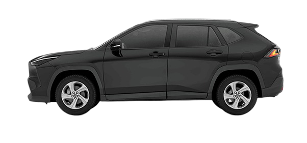
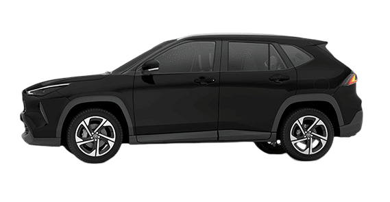
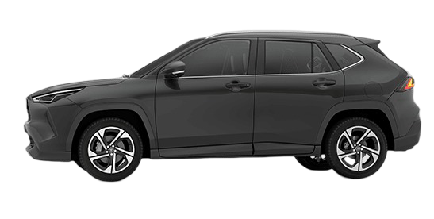
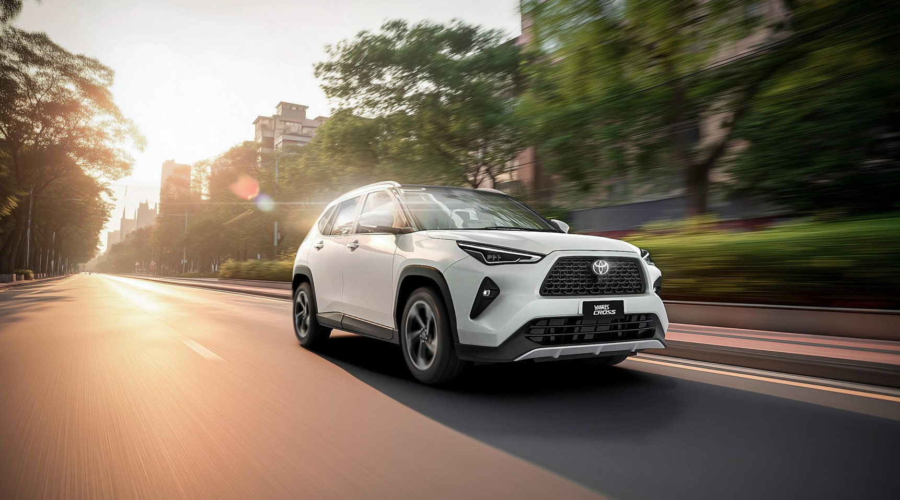
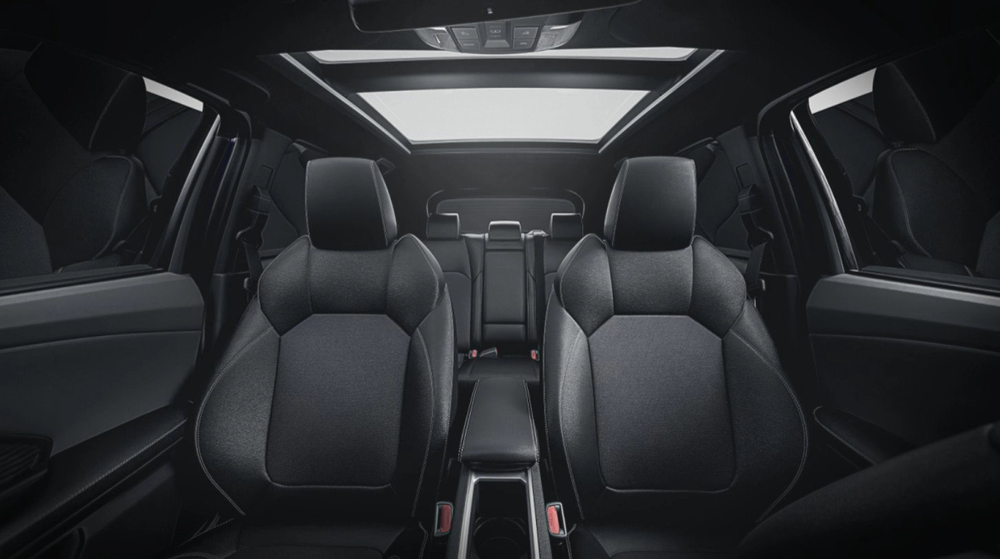
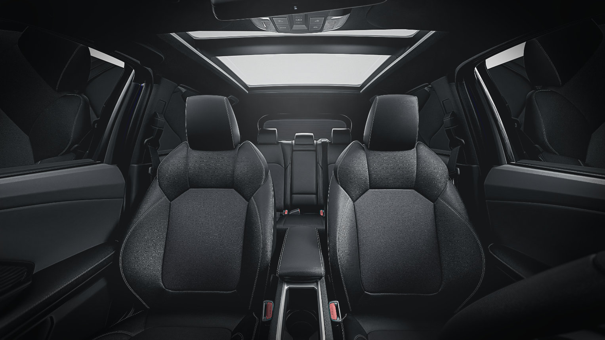
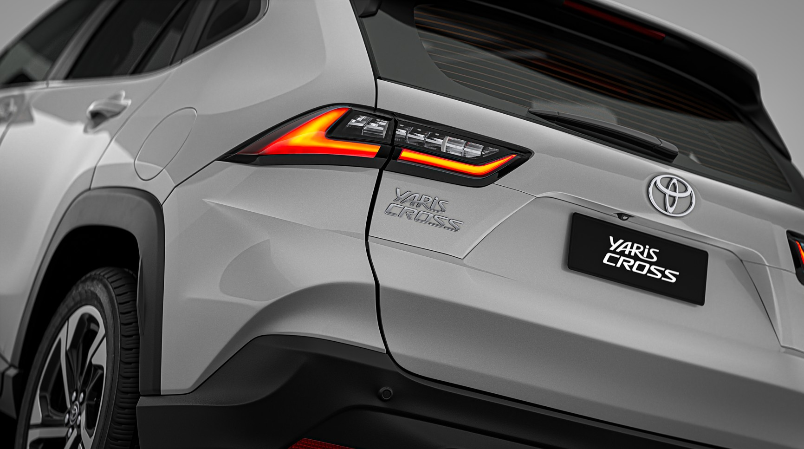

Encontrá tu versión y contáctanos.
Seleccioná la versión que más te guste.

XLI 1.5 CVT
$41.464.000

XEI 1.5 CVT
$45.260.000

SEG 1.5 CVT
$50.224.000
Razones para tener un Yaris Cross

DISEÑO
El nuevo Yaris Cross presenta una postura elevada propia de un SUV, que se refuerza con llantas de 18” y neumáticos 215/55 R18 (desde las versiones XEI), que fueron diseñadas para aportar una impronta dinámica. Gracias a esta elevación, la experiencia de conducción combina la agilidad de un vehículo urbano con la comodidad de acceso y confort características de un SUV.

CONFORT
Bajo una arquitectura que maximiza la sensación de amplitud, el diseño interior del Yaris Cross se destaca por el cuidado en los detalles y su funcionalidad: todo se encuentra dispuesto al alcance del conductor. Los asientos, diseñados para ofrecer una sensación de bienestar, varían según la versión: las XLI y XEI con tapizado en tela de color negro, mientras que la versión SEG presenta tapizado en cuero ecológico microperforado, también de color negro.

CONECTIVIDAD Y EQUIPAMIENTO
Posee una central multimedia de 10” que fue desarrollada para la óptima operación desde la perspectiva del usuario, buscando un acceso simple y directo a las funciones básicas. Esta pantalla cuenta con conectividad inalámbrica de Apple CarPlay Android Auto siempre que el teléfono disponga de la función. Cabe destacar la cámara de estacionamiento con sistema de visión 360° en las versiones SEG y el cargador inalámbrico para todos los teléfonos móviles compatibles, a partir de las versiones XEI.

